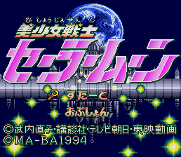

Sailor Moon - Genesis Games
Table of Contents
|
Series Information
|
Gameboy Games
|
Game Gear Games
Genesis Games
|
PC Games
|
SNES Games
Bishojo Senshi Sailor Moon

Genre:
Platform game
Complete walkthrough
available at
TELE-Pathetic Industries
Anime Video Game Resource Center © 1998 by
Luis A. Cruz